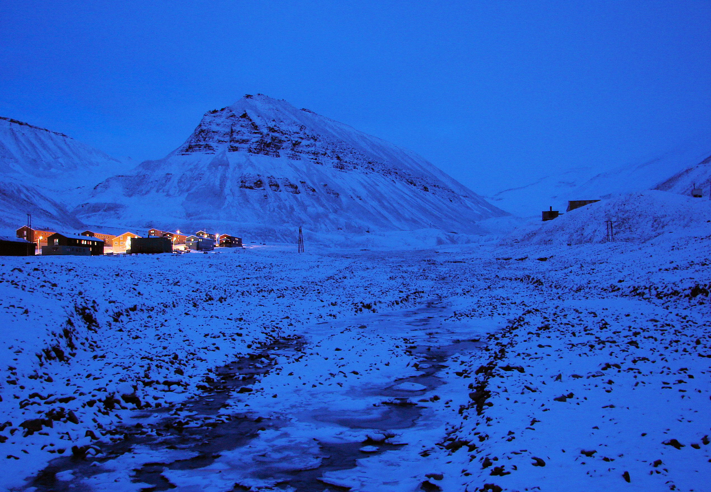
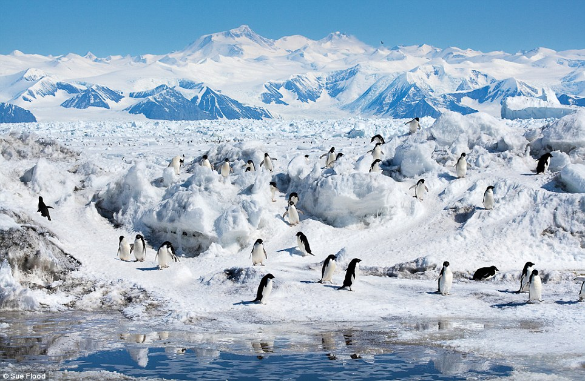
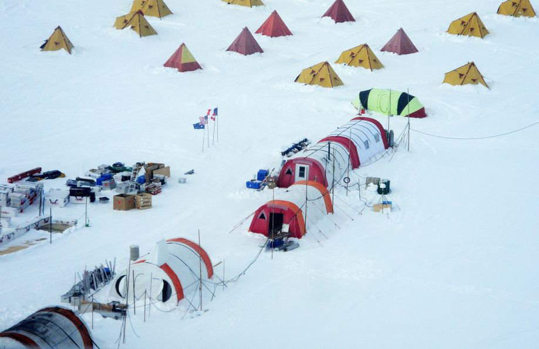
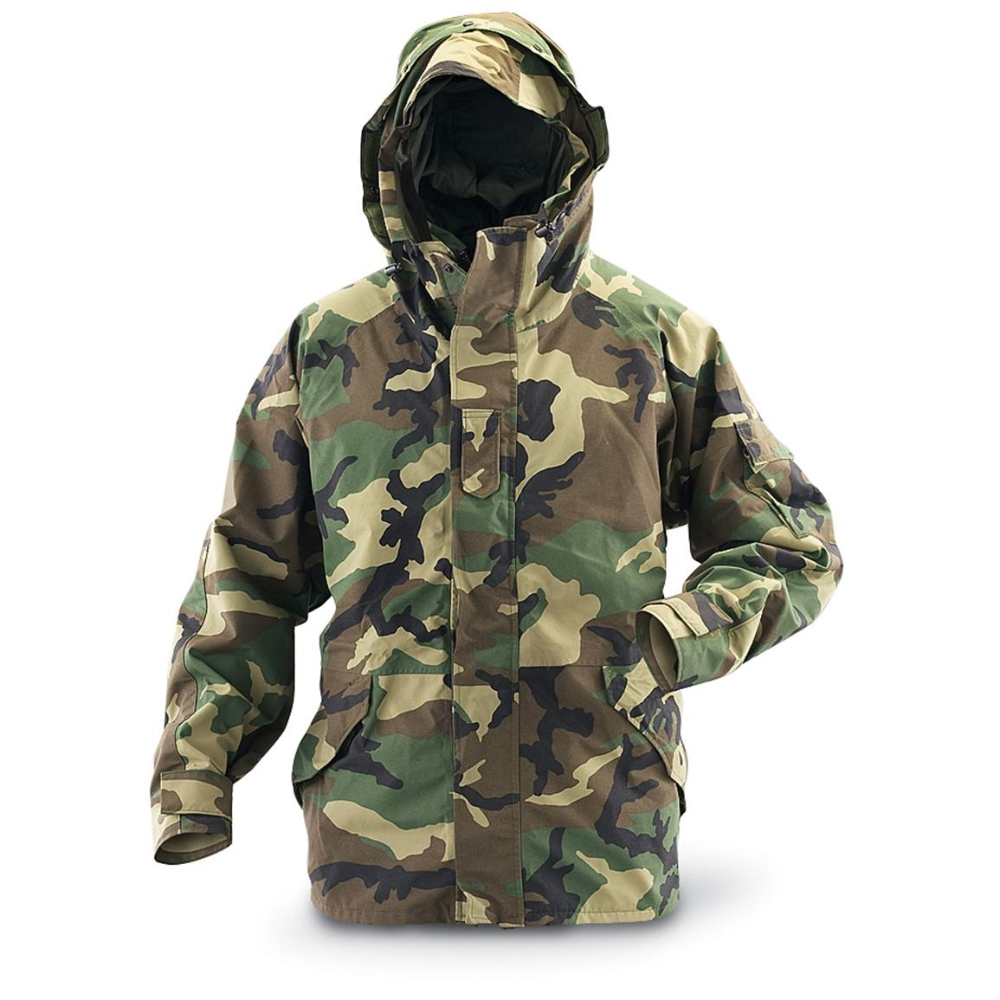

ΠΕΡΙΒΑΛΛΟΝ ΠΟΛΙΚΩΝ ΠΕΡΙΟΧΩΝ
Τα γεωγραφικά πλάτη πάνω από τις 66 μοίρες και 33 λεπτά βορείως ορίζουν την περιοχή που είναι γνωστή ως Αρκτικός Κύκλος. Η περιοχή αυτή καλύπτεται από περίπου 21 εκατ. τετραγωνικά χιλιόμετρα, από τα οποία τα 2/3 κατέχονται από τον Αρκτικό Ωκεανό. Περισσότερο από το μισό του ωκεανού αυτού καλύπτεται το περισσότερο διάστημα από επιπλέοντες πάγους.
Το καλοκαίρι, η θερμοκρασία στην Αρκτική μπορεί να φτάσει τους -38C. Το χειμώνα η θερμοκρασία μπορεί να πέσει εώς και τους -65C. Οι χειμώνες στην Αρκτική έχουν μεγάλη διάρκεια και είναι δριμύτατοι, με το έδαφος παγωμένο τον περισσότερο καιρό. Το καλοκαίρι διαρκεί περίπου 4 μήνες. Κατά το διάστημα αυτό, το έδαφος ξεπαγώνει αρκετά και επιτρέπει έτσι στην υγρασία να φθάνει στις ρίζες των δέντρων και των φυτών. Ο βόρειος εδαφικός χώρος μεταβάλλεται, καθώς κινείστε προς το νότο, από επιπλέοντες πάγους σε πλούσια χλοώδη βλάστηση και σε μια ευρεία δασική λωρίδα. Σε ορισμένα τμήματα, η λωρίδα αυτή, από βορρά προς νότο, έχει βάθος που φθάνει τα 1500 χλμ. Η αφιλόξενη αυτή περιοχή κατέχεται από τον άνθρωπο και τα ζώα από παλαιότερους χρόνους, καθόλη την ιστορία του ανθρώπινου γένους. Ανάλογα με την εποχή του έτους, η Αρκτική είναι πλούσια σε φυτική ζωή, ψάρια και άγρια ζώα.
Συγκριτικά, η ήπειρος της Ανταρκτικής που περιβάλλει το Νότιο Πόλο είναι μια αφιλόξενη περιοχή, σχεδόν χωρίς φυτική ζωή. Οι επιστήμονες έχουν βρει ποικιλία από λειχήνες (είδος φυτών) και ζωή εντόμων, αλλά τα είδη αθτά είναι ανεπαρκή για την διατήρηση της ζωής σε περίπτωση καταστάσεων επιβίωσης. Η ζωτική ζωή περιορίζεται κυρίως σε πουλιά, φώκιες και πιγκουίνους. Οι τελευταίοι περνούν το μεγαλύτερο μέρος της ζωής στο νερό. Ο εδαφικός χώρος είναι μεγαλύτερος, σε έκταση από την Ευρώπη και καλύπτεται πλήρως από πυκνά κομμάτια πάγου, των οποίων το πάχος είναι, κατά μέσο όρο, 2000μ. Η Ανταρκτική είναι πολύ ψυχρότερη από την Βόρεια Αρκτική, με θερμοκρασίες που πέφτουν μέχρι τους -89 βαθμούς Κελσίου και οι οποίες το καλοκαίρι ουδέποτε ανέρχονται πάνω από τους 15 βαθμούς.
Οι άνεμοι στην Ανταρκτική κινούνται με ταχύτητες που φθάνουν μέχρι τα 160 χλμ., σηκώνοντας χιόνι μέχρι ύψους 30μ. Οι επιζώντες πρέπει να παίρνουν μέτρα προφύλαξης από τέτοιες χιονοθύελλες. Εκτός από την έλλειψη ορατότητας, ο άνεμος μειώνει τη θερμοκρασία του αέρα, δημιουργώντας φονικές υποθερμικές συνθήκες. Βραχύχρονη επιβίωση είναι δυνατή, αλλά θα εξαρτάται από την άμεση επαφή με έναν από τους πολλούς σταθμούς επιστημονικών ερευνών που είναι διάσπαρτοι γύρω από το εξωτερικό άκρο της Ανταρκτικής.
Οι κύριοι παράγοντες από τους οποίους πρέπει να προστατεύομαστε στις πολικές περιοχές είναι οι χαμηλές θερμοκρασίες, ο άνεμος και η κατάσταση του έδαφους. Σύγχρονα υλικά ιματισμού, όπως τα Gore-Tex συνιστούν ιδανικό εξωτερικό προστατευτικό περίβλημα, αλλά και τα εσωτερικά στρώματα ιματισμού είναι ιδανικά. Στις πολικές περιοχές θα χρειάζεστε πολλά στρώματα ιματισμού από κατάλληλα υλικά για ελέγχετε την θερμοκρασία του σώματος. Η αφαίρεση ενός στρώματος ιματισμού μειώνει την θερμοκρασία του σώματος ενώ η προσθήκη την αυξάνει. Με τον τρόπο αυτό ελέγχετε την εφίδρωση των ρούχων και την ύγρανση που φέρονται κατάσαρκα.
Το ταξίδι σε μια περιοχή πολικών κλιματολογικών συνθηκών απαιτεί ειδικό ντύσιμο και εξοπλισμό. Να βεβαιώνεστε ότι η συλλογή των ειδών επιβίωσης που παίρνετε μαζί σας θα περιλαμβάνει πρόσθετα εφόδια για την αντιμετώπιση προτεταιοτήτων που επιβάλλονται από το ψύχος: εξασφάλιση ζεστασιάς και καταφυγίου. Αυτό σημαίνει ότι θα πρέπει να είστε εφοδιασμένοι με ένα κατάλληλο μέσο για το άναμμα φωτιάς, να έχετε αρκετές γερές σακούλες πολυθενίου (πλαστικές) και μερικά κατάλληλα σλύνεργα για ψάρεμα.
Αν βρεθείτε σε αρκτικό περιβάλλον λόγω απρόβλεπτου ατυχήματος, τότε οι προτεραιότητες του εξοπλισμού σας θα περιλαμβάνουν την διάσωση οποιουδήποτε υλικού μπορεί είναι δυνατό να περισυλλεγεί από το κατεστραμμένο αεροπλάνο ή οχημά σας.
Στρώματα Ιματισμού
 1. Τα ρούχα που φέρονται κατάσαρκα πρέπει να είναι από λεπτό, βαμβακερό υλικό, να εφαρμόζουν χαλαρά και να μπορούν να απορροφούν τον ιδρώτα. Το στρώμα αυτό πρέπει να διατηρείται καθαρό.2. Το δευτερό στρώμα ιματισμού πρέπει να είναι μάλλινο με πυκνή ύφανση και να φέρει συνδετήρες στον καρπό του χεριού και το λαιμό για την κατάλληλη προσαρμογή στο στρώμα.
3. Ένα τρίτο στρώμα θα αποτελείται από ένα πουκάμισο επενδεδυμένο με προβιά ή από ένα χιτώνιο με κουκούλα. Το στρώμα αυτό πρέπει να μπορεί να αφαιρείται εύκολα.
4. Το τελικό εξωτερικό στρώμα πρέπει να είναι αδιάβροχο και αδιαπέραστο από τον αέρα και να έχει μια μεγάλη κουκούλα. Για τις αρκτικές θερμοκρασίες, το ένδυμα αυτό πρέπει να επενδύεται με απαλό μονωτικό υλικό, όμοιο με εκείνο που χρησιμοποιείται στους υπνοσάκους.